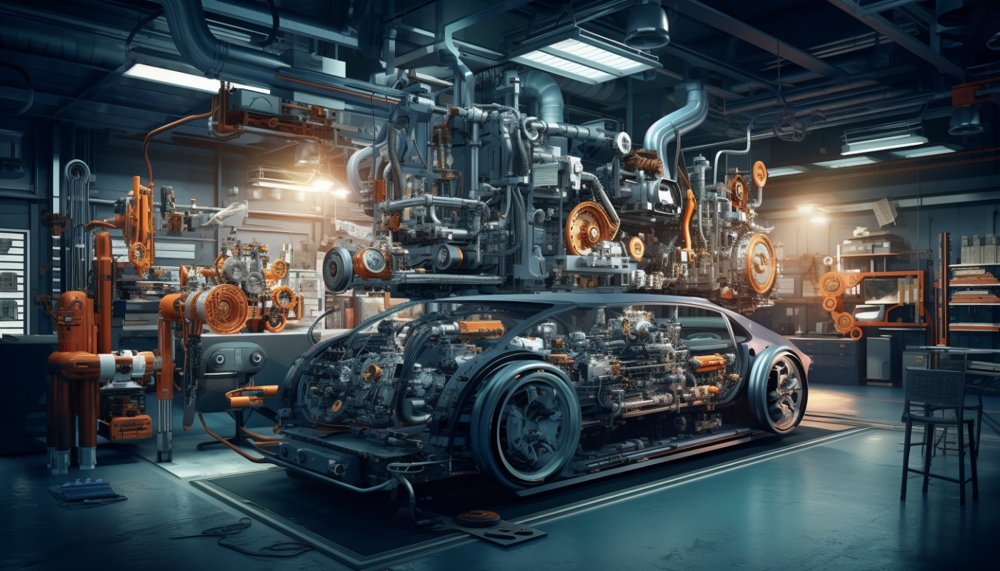

Este curso está diseñado para enseñarte las habilidades necesarias para reparar, diagnosticar y mantener vehículos automotrices. Cubriremos una variedad de temas, desde el motor hasta los sistemas eléctricos y de transmisión. Algunos de los temas que abordaremos incluyen:
Este curso tiene una duración de 10 semanas, con clases tanto teóricas como prácticas.
No se requiere experiencia previa, pero se recomienda tener un interés en la mecánica o en los autos. A lo largo del curso, proporcionaremos las bases para empezar desde cero.
Durante el curso, tendrás acceso a:
Haz clic en el siguiente enlace para inscribirte en el curso de Mecánica Automotriz:
InscribirseEste curso cubre desde las bases de la mecánica hasta el diagnóstico y reparación de los sistemas más complejos de los vehículos. Aprende a solucionar problemas con motores, frenos, y más.
